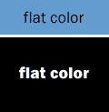
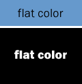
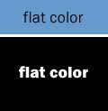
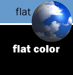

|
| ||
|
| ||
June 12, 1996
Revised December 12, 1997
This article is a synthesis of interviews with top Web designers:
How do you create beautiful pages that download quickly? It's easy if you understand the constraints of Web color management.
Three top Web designers share how to choose the right file format, how to select colors that won't dither (be interpreted and shown by the browser as a different color), and how to squeeze your file sizes down to the absolute minimum. You'll find out how to weigh image size and image quality against the resulting differences in download time, which impacts ultimate customer satisfaction.
This article is written for professional print designers who are experienced with Photoshop™ and have a working knowledge of the online environment.
Why Color Management?
Choosing the Right File Format
Manipulating GIF Files
Using the Browser-Safe Palette
Craig's Comparison Chart
Using High-End Browser Features
Additional Tips for Decreased Download Time
Summary
Media for the Web requires color management just as traditional printing does. However, the tools for color management on the Web are far less sophisticated than the color management tools available to print designers. Moving from the highly developed technology of print design to the more primitive tools of Web design can be difficult.
But, limited or not, these are the tools available. As Lynda Weinman, author of Designing for the Web states, "Web design has very specific constraints that it pays to understand. One of the constraints involves color management."
Anyone who has spent any time on the Web knows that you spend a lot of time waiting. Why is downloading so time consuming? Most users of the Web are on machines with slow network connections and moderate memory. According to Nadja Vol Ochs, Interactive Media Designer for the Microsoft Developer Relations Group, most users reach pages at 28.8 Kbps or 14.4 Kbps.
The time required to download the site is a major concern for a designer's potential clients. Large graphics files exacerbate the slow-download problem. Lynda estimates that, at 14.4, a 60K file takes about a minute to download. That's about 1 second per kilobyte. Craig Kosak, Art Director for the Microsoft Developer Network, says that a good target size is about 30K which downloads in about 30 seconds at 14.4 Kbps. "Be considerate of the bandwidth issues," Nadja points out, "You'll make a big difference in the user's experience and your client's happiness if you make your images download quickly."
You might think that the answer is to create bare-bones images just so they load quickly. Not so, according to Craig, "The designer's job on the Web is not about creating little tiny images and little tiny bitmaps; it's about creating beautiful pages and getting those file sizes as small as possible so that the pages download quickly." Understanding and applying Web color management techniques will help you do that. We'll start with file formats.
Creating an image that downloads quickly depends on two things:
Currently, two graphics file formats are dominant on the Web--JPEG and GIF.
JPEG (Joint Photographic Expert Group) is a method for compressing color bitmapped images that allows for variable compression. JPEG is also the name of the file format for storing the resulting image. JPEG's compression scheme is referred to as a "lossy" compression scheme because the images experience some loss of image quality when the image is compressed and then decompressed in the browser. JPEGs were developed for photographic-type images and are, as Lynda describes, "ideal for images that are photographic, organic in nature, and continuous in tone."
With JPEG, you can select a compression setting for each image. In Photoshop, you select from Low, Medium, High, and Maximum quality settings. For the most accurate image quality using Photoshop, select the Maximum quality setting for the lowest compression factor. (The higher the compression factor, the larger the amount of data removed from the image.)
The marvel of JPEG compression is that the format works with 24-bit images (16.7 million colors) and, yet, can be significantly smaller than the same image saved in GIF format that works with only 8-bit or less (256 colors) images.
For each photographic image on your Web site, determine how much sharpness and color accuracy to trade for download speed. How do you make that decision? All design decisions revolve around the purpose of the site. Determine what audience you are trying to reach: Is speed and navigation most important to your audience for that image, or is image quality? Decide this for each image, as well as for the overall site.
When your content is about pictures, as in a site about fine art or photography, your images need to be as high quality as possible. In this situation, save in JPEG at the Maximum quality setting (lowest compression) for the sharpest and most accurate color.
Craig's rule of thumb is to use JPEGs for photographic images, but not for line drawings or for images with large areas of flat color. Craig experimented with photographic images, mixed photographic and flat color, and flat color. The results are clear. "You can see in the chart that JPEG compression causes distortion in the flat color areas on machines running 256 colors." Lynda concurs and adds a caution about sharp edges in JPEG. "Anytime a JPEG file encounters a sharp edge, it tends to introduce blur or ugly artifacts around the edges. That's why JPEG works best with photographic images that have subtle colors and soft edges."
Nadja suggests that designers keep in mind that even though JPEG can display over 16 million colors, viewers with only 8-bit color (most users) will still see the image at only 256 colors at best. This affects the user's experience adversely, as she explains, "More distortion shows up at 256 colors." Further, the individual browser will interpret the abundance of color, and each browser will interpret the color a little differently. Nadja continues, "Always check how your JPEG image will look at 256 colors on different browsers and make your design decisions from that perspective."
Note: In Craig's Comparison Chart that accompanies this article, you can compare Low and Maximum JPEG compression on photographic, mixed, and flat images from the MSDN Online Web Workshop home page. The same image is also presented as an adaptive (256 color) palette GIF and as a custom Browser-Safe (216-color) Palette GIF. Compare the resulting file sizes and image quality among the images.
One confusing behavior of JPEGs is that, even when a JPEG is smaller than a GIF, the JPEG can take longer to load. Why? According to Lynda, "It's because the JPEG decompresses in the browser. So a smaller JPEG file with more colors might take longer to download and decompress than a bigger GIF file with fewer colors."
As Nadja points out, "Experimentation is essential to find out what's best for your site."
CompuServe's GIF (Graphics Interchange Format) is the industry standard for Web pages. With GIF, you can easily move Indexed Color, Gray Scale, or Bitmap images between computer platforms. CompuServe® developed GIFs for its online service subscribers. GIF files support only 8-bit, or 256 colors. (In Photoshop, your image must be in Indexed Color in order to save in 8-bit color.) When you compare that to the choices and control of JPEG's 24-bit, or 16.7 million colors, you can almost hear a designer scream, "Why use them?" There are good reasons for doing so, which we'll address in the next section.
It's important for designers to first understand how GIF compression works in order to decrease GIF file sizes. GIF files use LZW compression which is referred to as "lossless" compression. This means that the images stay true when compressed. GIFs compress by looking for repeating patterns of color along each horizontal line and compressing the pixels. Craig explains, "A GIF scans across your image and says, hey, is that pixel the same as that one? Good. I can compress that one with this one, and, look--there's another one!" Keep in mind that the images that get compressed the most contain the most repeating patterns along the horizontal.
Craig suggests the following exercise to illustrate this point. Create a gradient fill with a vertical orientation and save it as a GIF. Take the same image and turn it horizontally and again save it as a GIF. Compare the file sizes. You'll see that if you use gradation from top to bottom (horizontal), you'll have a much smaller image than if you use gradation from right to left (vertical). The image with the vertical gradient will be about twice the size of the image with the horizontal gradient.
Craig's research (see Craig's Comparison Chart) allows him to state without question, "For flat color graphics, use GIF." Nadja provides her rule of thumb, "If I have a small photographic image with lots of color in it, I use a JPEG. Otherwise I choose GIF. And," she continues, "don't forget that most users don't have 24-bit cards. They are going to get 8-bit color at their end, so you might as well control for it." Lynda uses GIFs for graphics, cartoon, line-art, and flat illustrations.
Lynda offers a specific Photoshop tip for getting the smallest possible GIF files, "Turn the dithering option off in Photoshop when it's appropriate, before you convert your images to 8-bit color." She points out that any dithering produces noise which greatly increases GIF file sizes. Craig adds that he usually loads Lynda's Browser-Safe Palette, a palette that ensures the selected colors won't dither on Macintosh® computers, PCs, or the leading browsers.
A typical designer's Web assignment might be: "Create a beautiful, useful site that will do me proud--and keep it under 40K." Craig was given this exact challenge for the new For Developer's Only home page. He was concerned about the 40K limit. That's when he began his rigorous experimentation with GIFs. He discovered that selecting colors and image types was as much an art as a science.
An 8-bit adaptive palette GIF looks at the 24-bit color range for the image and selects the 256 colors that are most common to that particular image. It then optimizes an 8-bit adaptive palette for that image in all 256 colors.
You might choose an adaptive palette GIF if your image contains sharp edges and type, or if you require transparency.
The process of downsizing a GIF file is straightforward in Photoshop:
Craig suggests this exercise to explore adaptive palettes: Create or select a black-and-white image with an anti-aliased letter on a black background. In Photoshop, go to the Indexed Color menu. Choose Select Color and ask for an exact palette.
"When I did this, Photoshop indicated an exact palette of 23 colors. You wouldn't think it would take 23 colors to make what seems to be a black-and-white image. But when you look at the anti-aliased type close-up, you can see many colors of gray. I've found that 8-12 colors works nicely for anti-aliased single-color type on a solid color background.
"As you reduce the number of colors available, the image becomes only slightly chunkier. The file size, however, changes significantly. Use your artist's eye to arrive at a balance of image quality and file size that works for your site.
"I found dramatic changes in file sizes when I started reducing the number of colors when I created GIF images." Craig began to look at this process as a bit of a game, "How far can I go to downsize the file? What if I take it down to 60 colors? How does it look? What do I lose? What if I take it down to 40? Okay. What about 30?" Craig downsized each image until he could see degradation and then increased the number of colors again to find his balance between speed and image quality and user needs.
Craig advises, "Tune each of your graphics. This process really pays off in your download time!"
Because using all 256 colors creates a large GIF, consider using an exact palette whenever possible. If your image contains fewer than 256 colors, Photoshop offers an exact palette by default. It's the best choice for producing GIFs that will not dither (assuming you've selected colors from Lynda's Browser-Safe Palette) and contain the smallest number of colors possible. In some cases you may be able to abandon the exact palette for an adaptive palette where you specify even fewer colors, but going with an exact palette is usually a safe choice.
If an image uses a color that is not available from one of the color slots in your browser's 256-color palette, your browser will use the closest match that it can find on the palette. In an exact palette, Nadja notes that if the colors are way off-scale with the colors in the browser's palette, the browser won't recognize the colors, and will change them in completely unexpected ways. How do you avoid this problem?
The best approach is to select the colors for your image from the colors that the user's browser is prepared to use. Lynda's Browser-Safe Palette (available free from Lynda at http://WWW.lynda.com/HEX.html  ) helps you do that. It contains only 216 colors out of the possible 256 colors. Why only 216 colors? The remaining 40 colors vary on Macs and PCs. By eliminating the 40 variable colors, she has optimized her palette for cross-platform use.
) helps you do that. It contains only 216 colors out of the possible 256 colors. Why only 216 colors? The remaining 40 colors vary on Macs and PCs. By eliminating the 40 variable colors, she has optimized her palette for cross-platform use.
Designers will further appreciate that Lynda has organized her Browser-Safe Palette in a way that makes sense to designers. She offers two versions: one organized by hue; the other by value.
Lynda suggests using her palette for "flat-color illustrations, logos with flat color, and areas in any image that have a lot of a single color." A non-dithering palette is essential for areas of flat color in cross-platform use. As Lynda says, "When a browser dithers flat colors it looks far more objectionable than when it dithers photographs." For photographic images, Craig points out, colors will dither. "Don't even bother trying to control that." Focus on what you can control.
Craig manipulated JPEG and GIF files from the MSDN Online Web Workshop home page for this chart. Each image presented contains the same number of pixels, to give you a baseline comparision of file size. Use this chart to help you decide which file format to use.
Note: On your monitor, you may not see much difference in image quality, but you'll see huge differences in image size, which translate into differences in download time which, in turn, impact customer satisfaction with your site.
| Adaptive GIF - 6K | 216-Color GIF - 6K | Low JPEG - 3K | Max JPEG - 7K | |
 |
 |
 |
||
| 3bit GIF - 1K | 216-Color GIF - 2K | Exact GIF - 2K | Low JPEG - 3K | Max JPEG - 5K |
 |
||||
| Adaptive GIF - 4K | 216-Color GIF - 4K | Low JPEG - 3K | Max JPEG - 7K |
For anything that contains a photographic image, a low quality JPEG is probably your best choice. It comes in at half the size of the Adaptive or Customized 216-color GIF, and at less than half the size of the Maximum quality JPEG. You can see some quality degradation, but you pay a big price in increased download time for just a little more quality.
With flat color, load Lynda's Browser-Safe (216-color) Palette GIF, or use an exact palette.
Low quality JPEG created the smallest file, but you start to see dithering in the flat colors. The Browser-Safe GIF file is larger than the Low quality JPEG, but the GIF gives you better rendering in flat areas. If you want to use photographic images, consider separating them out and using JPEG.
Because not all browsers understand all HTML tags and most ignore tags they do not support, designing for high-end browsers requires much forethought.
Different designers offer different approaches. Nadja's approach is to aim for the middle ground, "Use features supported by a majority of users." One solution more and more Web designers are embracing, according to Lynda, is to set up multiple Web pages that are maximized individually for the browsers that are viewing them. "This involves creating duplicate sets of pages that are each optimized for the advanced browser and the limited browsers, so Web pages look like they were intended to when viewed under differing browser conditions." Craig has conflicting information: Microsoft's Internet Advisory Board recently reported that clients are moving away from the duplication solution, finding it too expensive to maintain multiple sets of pages. "The features you should use," Craig suggests, "are the ones that degrade gracefully in the major browsers."
"With high-end Web pages," Craig points out, "you care about every pixel. If it changes in a way you may not want or expect, you won't be really happy." You need to be able to predict behavior and you can, when armed with specifics about a feature.
GIF is the only file format that allows transparent images that are used to "create the illusion of irregularly shaped computer files," states Lynda, "by assigning one color in a graphic to be invisible." This is often called masking.
Halos, the often unwelcome fanned or dithered edges around an image on a Web page, are caused by anti-aliasing the edge of the graphic. Anti-aliasing creates a color blend that a single color transparency scheme can't accommodate. Lynda explains, "With the ability to select only one color as transparent, you can't eliminate all the blended banding colors. The result is a halo."
Craig notes that Lynda's book presents a thorough discussion of art preparation when using transparency and suggests that designers look to her book for specific instruction. He offers his own rule of thumb, however, "Avoid transparency for the most part. Make your image against the same color as your page and insert the image as a regular, not transparent, graphic." Lynda also suggests a limited use, "Use transparent GIFs only on Web pages with background patterns. And use an aliased edge, which has no predisposition to its original background color."
Microsoft Internet Explorer 2.0 and 3.0 let you create background colors in specific cells of tables. (A table cell is defined by a <TD> or Table Data tag in HTML.)
Be sure to use text that will read nicely against your background, assuming the table cell colors aren't there. For example, because table cell colors don't show in early versions of Netscape® Navigator®, the table cell background color disappears and the type shows up on the page background color.
Whether or not that's a problem depends on whether you've planned for type readability against the page color background, as well as the table cell color background. To take this example a little further: Imagine that you have created a table cell with a black background and white type. The background of the page is also white. In Internet Explorer, the effect is sharp and crisp. When another browser is used, however, the black table cell background disappears. This leaves your white type set against the white page background. The table cell appears to be empty.
Something similar happened during the early development of the Nature Conservancy Web site [Editor's note: the Nature Conservancy site is scheduled to go live in July]. The designers were using background colors in table cells with anti-aliased images, with transparent backgrounds on top of those colors. In Navigator, the table cell background colors weren't recognized, so the table cell background color changed to the page background color. The unwelcome result was a fuzzy halo against the background of the Web page when viewed in Navigator.
Table cell backgrounds are excellent for tables that contain HTML text. "The user's experience can be richer with colors behind the table to demarcate or enhance areas of the page," points out Nadja. Craig encourages designers to use this feature, "There is nothing special you have to do, except ensure that your type is readable on the page color. It's easy and brings another level of design sophistication in pages viewed in Internet Explorer. "
Our top Web designers offer these quick tips:
"Designing for the Web is like going backwards in time; a throwback to graphics of the early days before 32-bit color and high resolution," states Lynda, "But I maintain that an artist can make appealing visuals regardless of a tool's limit; that's why they call us artists."
What makes a great Web designer? "In my experience at Microsoft," Craig summarizes, "what distinguishes a really good Web designer is how much time, care, and craftsmanship the designer applies to this kind of work." And Nadja concludes, "A great Web designer always thinks first about the information being conveyed."
Glossary
The following definitions are courtesy of Lynda Weinman from Designing for the Web. Her book is available from New Riders Publishing (ISNB: 1-56205-532-1).
Kate S. Knight is an instructional designer, writer, and educator in the computer industry.
Did you find this material useful? Gripes? Compliments? Suggestions for other articles? Write us!
© 1999 Microsoft Corporation. All rights reserved. Terms of use.